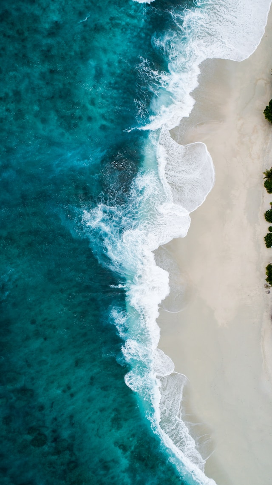
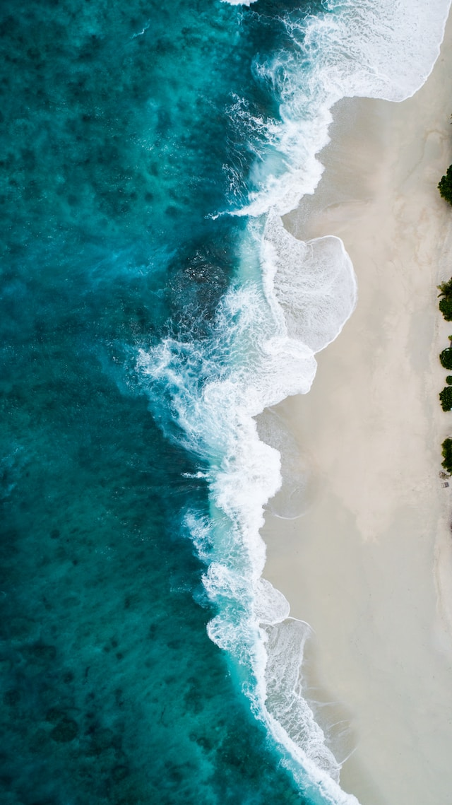
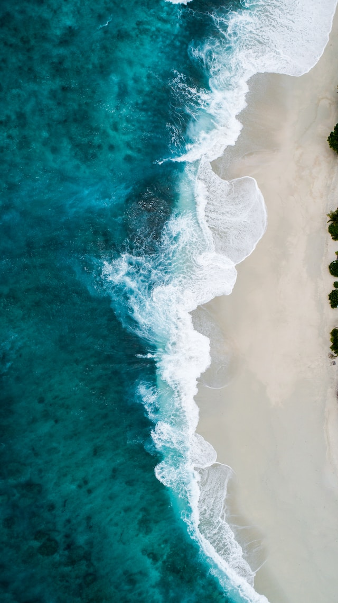

Дождливое лето
Афанасий Фет
Ни тучки нет на небосклоне,
Но крик петуший — бури весть,
И в дальном колокольном звоне
Как будто слезы неба есть
Покрыты слегшими трава’ми,
Не зыблют колоса поля,
И пресыщенная дождями,
Не верит солнышку земля
Под кровлей влажной и раскрытой
Печально праздное житье
Серпа с косой, давной отбитой,
В углу тускнеет лезвие.
| июнь | 30 дней |
| июль | 31 день |
| август | 30 дней |
